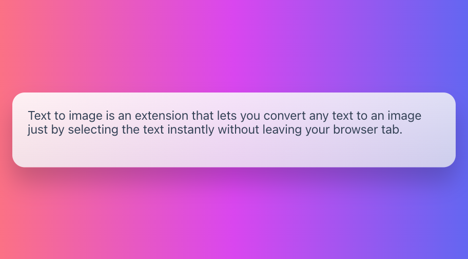

`<!DOCTYPE html>

<html lang="en">
  <head>
    <meta charset="UTF-8" />

    <meta http-equiv="X-UA-Compatible" content="IE=edge" />

    <meta name="viewport" content="width=device-width, initial-scale=1.0" />

    <title>Document</title>

    <style>
      body {
        font-size: 0;
      }
      * {
        margin: 0;
        padding: 0;
      }
      img {
        display: inline-block;
      }
    </style>
  </head>

  <body>
    
    <button onclick="addCanvas()">生成Canvas</button>
    <button onclick="generateImg()">生成图片</button>

    <script>
      function addCanvas() {
        let bt = document.querySelector('button');
        // 创建DOM元素
        let img = new Image();
        img.src = './cat.webp';
        // 待图片加载完成
        img.onload = function () {
          // this指向图片
          let imgWidth = this.width;
          let imgHeight = this.height;
          let { canvas, ctx } = createCanvasAndCtx(imgWidth, imgHeight);
          // 在画布上绘制该图片,定位图像以及规定图像宽高
          ctx.drawImage(this, 0, 0, imgWidth, imgHeight);
          // 把canvas插入到生成canvas按钮前面
          document.body.insertBefore(canvas, bt);
        };
      }
      function createCanvasAndCtx(imgWidth, imgHeight) {
        let canvas = document.createElement('canvas');
        canvas.setAttribute('width', imgWidth); // 画布的宽高为图片的宽高
        canvas.setAttribute('height', imgHeight);
        canvas.setAttribute('onmousedown', 'start()'); // 鼠标按下事件
        let ctx = canvas.getContext('2d');
        return {
          canvas,
          ctx,
        };
      }
      function start() {
        let img = document.querySelector('img'),
          canvas = document.querySelector('canvas'),
          ctx = canvas.getContext('2d');

        imgData = ctx.getImageData(0, 0, img.clientWidth, img.clientHeight); // 像素数据
        canvas.onmousemove = (e) => {
          let w = imgData.width, //1.获取图片宽高
            h = imgData.height,
            num = 10, // 马赛克的程序, 数字越大越模糊
            color = getXY(imgData, e.offsetX, e.offsetY);
          for (let i = 0; i < num; i++) {
            for (let j = 0; j < num; j++) {
              //设置imgData上坐标为(e.offsetX + l, e.offsetY + k)的的颜色
              setXY(imgData, e.offsetX + i, e.offsetY + j, color);
            }
          }
          // 更新canvas数据
          ctx.putImageData(imgData, 0, 0);
        };
      }
      // 获取鼠标当前所在的像素RGBA
      function getXY(obj, x, y) {
        var { width, height, data } = obj,
          color = [];
        color[0] = obj.data[4 * (y * width + x)];
        color[1] = obj.data[4 * (y * width + x) + 1];
        color[2] = obj.data[4 * (y * width + x) + 2];
        color[3] = obj.data[4 * (y * width + x) + 3];
        return color;
      }
      function setXY(obj, x, y, color) {
        var { width, height, data } = obj,
          color = [];
        obj.data[4 * (y * width + x)] = color[0];
        obj.data[4 * (y * width + x) + 1] = color[1];
        obj.data[4 * (y * width + x) + 2] = color[2];
        obj.data[4 * (y * width + x) + 3] = color[3];
      }
      // 画布导出为 Base64 编码的图片
      function generateImg() {
        let canvas = document.querySelector('canvas');
        let newImg = new Image();
        newImg.src = canvas.toDataURL('image/png');
        document.body.append(newImg);
      }
    </script>
  </body>
</html>
